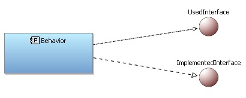
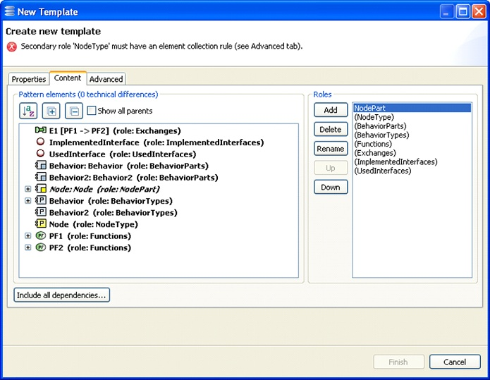

Template Creation
Creating a template is by many ways similar to creating a pattern. In a model, create model elements that correspond to the simplest pattern the template must support. Whenever there can be several elements, just create two (unless the elements do not need to be navigated by OCL queries, see below, in which case one is sufficient).
Let us consider the example of Node Physical Components and some of their content in Capella. In the figures below, a Physical Architecture Blank diagram and an Contextual Component External Interfaces diagram represent the relevant elements:
- a Node Physical Component, which will be the main element;
- the Behavior Physical Components which are deployed on it;
- the Physical Functions that are allocated to the Behaviors;
- the Functional Exchanges between the Functions;
- the Interfaces used and implemented by the Behaviors.


In the Architecture diagram, select the main element (the Node) and its content and click the 'Create template…' menu item from the Patterns menu.

A Template Creation wizard pops up. It looks a lot like the Pattern Creation wizard, with a few differences. In the first tab, basic properties, meta-data and documentation about the template can be written.

An error message may indicate that the roles must be elaborated for the template to be complete. Click the 'Content' tab for that purpose.
In the 'Content' tab, the first role must be mapped to the main element of the template and every root element must be mapped to a role. This will enable the user to specify how to collect those root elements in the model according to the main element. In the figure below, one role has been created per kind of element: Node Part, Node PC, Behavior Parts, Behavior PCs, Functions, Exchanges, Implemented Interfaces, Used Interfaces.

Several configurations are possible. For example, the implemented Interfaces and used Interfaces could have been grouped together in an 'Interfaces' role. The objective is to define roles that will be as convenient as possible for pattern application while being suitable for template creation.
An error message indicates that the roles miss an 'element collection rule'. To deal with it, click the 'Advanced' tab.
In this tab, roles have a 'Usage' section in which an 'element collection rule' can be written.

This rule is an OCL query on the model which is similar to the 'target derivation rule' of the Pattern Creation wizard
(see section 'Role details'). Its purpose is to specify how to collect elements which are similar to those mapped to the role in every situation. It is, in a way, a generalization of the elements that are mapped to the role.
For example, the role 'BehaviorParts' must have a rule which specifies that the Behavior PC Parts are those which are deployed on the Node PC Part. This can be written 'NodePart.deployedParts' in OCL, where 'NodePart' refers to the element mapped to the main role. As explained in
section 'The OCL editor', it is possible to refer to the roles which are above the current one, so roles must be ordered according to the dependencies between their respective collection rules.
Other properties of the roles can be specified, such as the description or the Container Derivation Rule. These properties will be included in the patterns created with the template but do not have a direct impact on the template.
Once the specification of the roles has been completed, the 'Finish' button terminates the wizard and creates the template in the selected catalog.